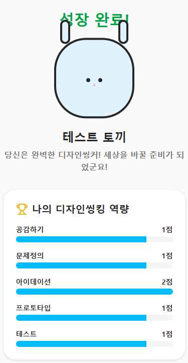

함께할 4개의 챕터
52g는 어떤 조직이고, 회사는 어디로 가고 있는가
문제를 제대로 찾는 기술, 5단계 프로세스
GenAI가 각 단계를 어떻게 바꾸는가
AI로 디자인씽킹 퀴즈 게임 만들기
일하는 방식이 근본적으로 달라지고 있습니다
GS그룹의 디지털 업무혁신을 주도하는 오픈 이노베이션 조직
“새로운 도전에 설레는 세상을 만듭니다”
GS그룹 계열사: GS칼텍스, GS리테일, GS건설, GS에너지, GS EPS, GS E&R, GS엔텍, GS네트웍스, GS글로벌, GS파워, 자이S&D, 파르나스 호텔 등
오픈크루: 일동제약, 광동제약, 삼양인터내셔날, 삼양통상 등 외부 기업도 참여
각 계열사에서 참여하는 현업 구성원으로, 현장의 문제 해결 프로젝트를 리딩하는 핵심 인력
이런 마음가짐이라면 지원하세요
Crew가 현업 구성원들과 팀을 구성해 현장의 실제 문제를 해결합니다. 프로젝트에는 Crew와는 별도로 52g 전담 구성원이 함께합니다.
Catalyst(과제 오너) — 문제를 과제로 만들고, 이해관계자를 정렬해 끝까지 실행하며 확산·제품화로 연결
Facilitator(과정 설계자) — 워크숍을 설계·진행하고, 논의 흐름을 유지하며 시각화로 합의를 촉진
52g가 현장의 문제를 풀 때 사용하는 핵심 방법론
사람(사용자)을 깊이 이해해 ‘진짜 문제’를 정의하고,
팀 협업으로 빠르게 프로토타입을 만들고 테스트하며 개선을 반복해 해법을 찾는 방식
Auernhammer & Roth, 2021
Empathize
고객의 시선으로 보기
Define
진짜 문제 명확히
Ideate
아이디어를 최대한 발산
Prototype
최소 비용으로 제작
Test
피드백으로 개선
이 과정은 직선이 아니라 반복(iterate)입니다. 각 단계에서 발산과 수렴을 오가며 반복하는 과정입니다.
“신입사원 온보딩 교육, 현장에 가면 다 까먹는다”
처음부터 완벽한 답이 아니라, 빠르게 만들고 → 피드백 받고 → 다시 돌아가는 반복
온보딩 설문 데이터 + AI = 더 빠른 문제 발견과 해결
AI가 빠른 인사이트를 주지만, 사람과 공감하고 최종 판단을 내리는 건 사람의 몫입니다
AI와 함께할 때, 5단계를 반드시 순서대로 밟을 필요는 없습니다
공감 + 정의를 AI 분석으로 동시에 수행
데이터가 충분할 때
문제가 명확하면 바로 프로토타입부터 시작
빠른 검증이 필요할 때
테스트 결과로 어느 단계든 즉시 회귀
AI가 반복 비용을 낮춰줌
5단계는 “체크리스트”가 아니라 “도구 상자”입니다.
상황에 맞는 도구를 꺼내 쓰세요.
GenAI(Generative AI) — 텍스트·이미지·코드 등을 스스로 생성할 수 있는 AI
사람이 사용자의 문제에 공감
↓
사람이 문제 발견·정의·해결
사람이 사용자의 문제에 공감
↓
AI와 함께 문제 발견·정의·해결을 빠르게
사람 + AI 협업의 핵심: AI가 아이디어를 제안하고, 사람이 비판적으로 평가하고, 다시 반복합니다.
최종 판단은 언제나 사람의 몫입니다.
AI를 쓸 줄 아는 것 ≠ AI를 잘 쓰는 것. 결과를 비판적으로 평가하고 방향을 잡는 것이 진짜 역량
보안 주의: 일반적인 질문·아이디어 발산은 범용 AI OK • 사내 기밀 데이터가 포함된 작업은 반드시 MISO(사내 AI)에서 진행
AI Studio에 프롬프트 하나를 넣으면, 디자인씽킹 퀴즈 게임이 됩니다
🥚 알에서 시작하는 캐릭터를 키우세요
📝 디자인씽킹 5영역 퀴즈를 풀면서
✅ 맞추면 캐릭터가 성장하고
❌ 틀리면 HP가 깎입니다
📊 마지막에 나의 역량 분석 그래프!
1. 프롬프트 COPY → AI Studio System Instructions에 붙여넣기 2. 문제은행 다운 → AI Studio에 파일 첨부
╔═ 앱 생성 요청 ═╗
첨부된 문제은행 파일을 기반으로
“디자인씽킹 알 키우기” 듀오링고풍 귀여운
웹 퀴즈게임을 HTML/CSS/JS로 만들어줘.
╔═ 비주얼 스타일 ═╗
★ 듀오링고 스타일 플랫 일러스트!
- 둥글둥글한 파스텔 색상 캐릭터
- 큰 눈, 단순한 형태, CSS로 구현
- 밝고 따뜻한 배경 (파스텔톤)
- 한글 가시성 좋은 폰트, 큰 글씨
★ 게임의 생명은 귀여움!
아기자기하고 사랑스럽게!
★ 문제+보기가 한 화면에 다 보이게!
캐릭터는 작게 상단에, 문제는 크게!
╔═ 게임 규칙 ═╗
- 🥚알 캐릭터를 키우는 퀴즈게임
- HP: ❤x5, 점수: 0에서 시작
- 5영역 각1 + 랜덤1 = 총 6문제
- 4지선다. 정답+10점 오답HP-1
- 성장: 🥚→랜덤 귀여운 동물 진화
(진화 애니메이션 포함)
- HP 0 = GAME OVER (부활 1회)
╔═ 함정 설계 ═╗
문제정의 영역을 가장 어렵게!
★ 4개 보기가 같은 상황 안에서!
동떨어진 보기 절대 금지!
- 오답도 그럴듯해야 진짜 함정
- 틀리면: “그건 해결책!” 교육
╔═ 리액션 ═╗
▶ 정답: 캐릭터 방방 뜀 + 귀여운 대사
▶ 오답: 눈물글썽 + 해설
▶ 진화: 화려한 이펙트 애니메이션
▶ GAME OVER: 쓰러짐 + 부활 버튼
- 모든 리액션에 도트 애니메이션!
╔═ 결과 화면 ═╗
📊 영역별 역량 막대그래프
- 최종 캐릭터 + 이름 + 한줄평
- “스크린샷 저장” 버튼
- 약한 영역 학습 조언
╔═ 문제 출처 ═╗
- 첨부된 문제은행.txt에서 랜덤 출제
- 문제은행에 없으면 IDEO, d.school,
HBR 등 검색 후 의도에 맞게 생성
╔═ 출력 ═╗
완성된 HTML 파일 1개로 출력해줘.
브라우저에서 바로 실행 가능하게.
═══ STAGE 2: 문제정의 ═══
🐣 HP: ❤❤❤❤❤ SCORE: 30
Q4. 신입사원이 “업무가 어렵다”고 한다.
당신의 다음 행동은?
[A] 매뉴얼을 개선한다
[B] 멘토를 배정한다
[C] 뭐가 어려운지 구체적으로 물어본다
[D] 교육을 다시 시킨다
❌ A를 골랐다면
🐣💦 “삭약... 그건 해결책이에요!
‘어려운게 뭐야?’부터 물어봐요”
HP: ❤❤❤❤🖤 (-1)
✅ C를 골랐다면
🐣 “생약! 문제부터 찾는 거 맞아요!
+10점! 열심히 키워주세요!”
SCORE: 40 🎉
핵심: 문제정의 영역에서 해결책 함정을 체험하게 됩니다
우리는 본능적으로 해결책부터 떠올립니다. 하지만 문제정의가 바뀌면 해결책도 완전히 달라집니다. 좋은 답보다 좋은 질문이 먼저입니다.
설문 분석, 페르소나 대화, 아이디어 발산까지 — AI가 속도를 바꿔줍니다. 하지만 공감하고 판단하는 건 사람의 몫입니다.
오늘 프롬프트 하나로 퀴즈 게임을 만들어봤습니다. AI를 쓸 줄 아는 것과 잘 쓰는 것은 다릅니다. 직접 써봐야 늡니다.

다음 교육에서 또 만나요!